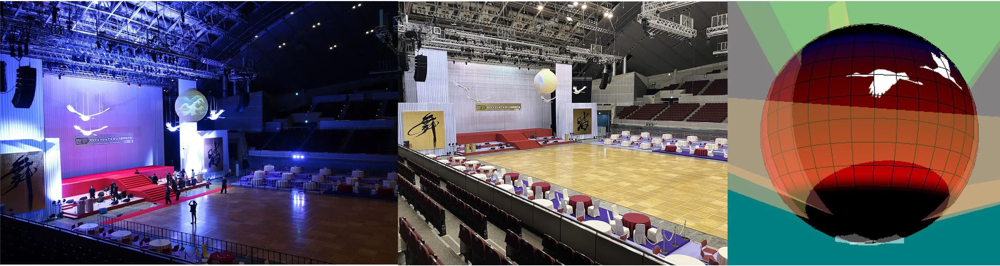
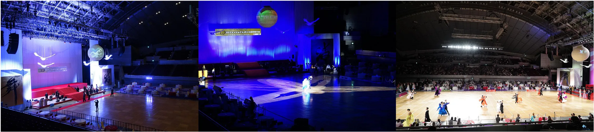
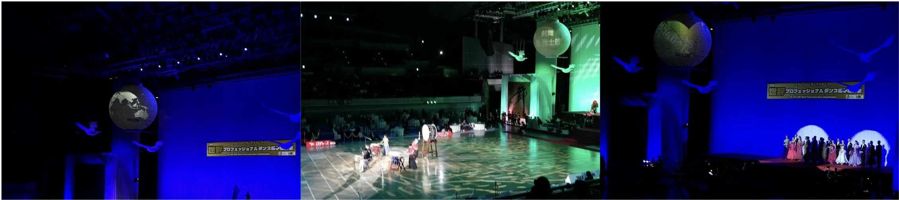
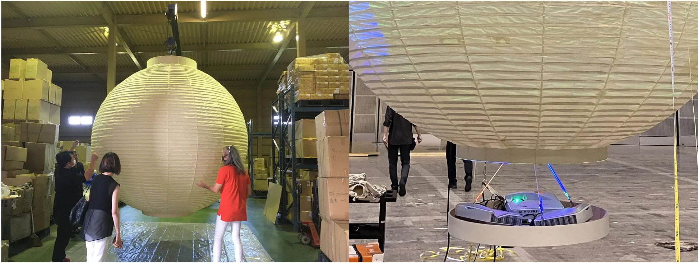
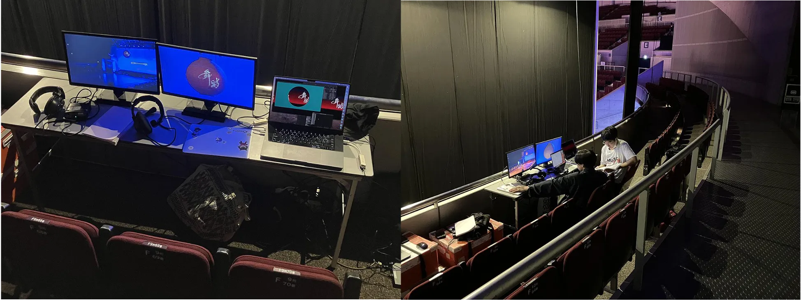
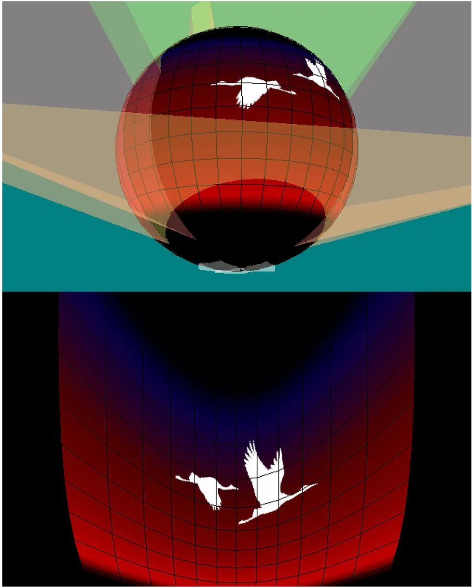

大提灯プロジェクションマッピング
世界プロフェッショナルダンス選手権のための直径３mの大提灯へのプロジェクションマッピング

プロジェクションマッピング, リアルタイム映像生成
使用技術
- C++ (OpenGL, OpenCV)
役割(チーム開発: 3人)
- システムの運用
概要
本コンテンツは、直径約3mの超大型提灯を用いたプロジェクションマッピング作品です。提灯内部に設置したプロジェクタから映像を投影し、提灯全体を巨大なスクリーンとして活用しています。曲面形状の提灯に自然な映像表現を実現するため、3DCG技術を用いた投影シミュレーションを行い、最適な映像を生成しました。ダンス世界大会の会場演出の一つとして展示され、会場を彩る象徴的なコンテンツとして多くの来場者にご覧いただきました。
大会での巨大提灯インタラクティブコンテンツの展示の様子
 
大型提灯への映像操作

インタラクティブな映像生成と操作

インタラクティブな映像生成

そこで、3DCG空間上に提灯とプロジェクタの配置を再現し、投影シミュレーションに基づいて投影用映像を生成しました。まず、提灯表面に表示したい理想的な映像を3DCGモデル上で作成し、その後、各プロジェクタの位置・向き・画角を再現した仮想カメラからレンダリングを行うことで、投影時の歪みを補正した映像を生成しています。
映像生成システムはC++、OpenGL、OpenCVを用いて実装し、大会の進行に合わせて映像をリアルタイムで生成・送出しました。また、設営後の位置ずれにも対応できるよう、提灯形状やプロジェクタの位置・姿勢を調整可能な仕組みを備えています。